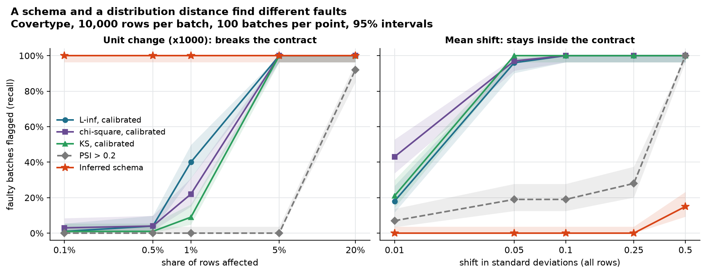
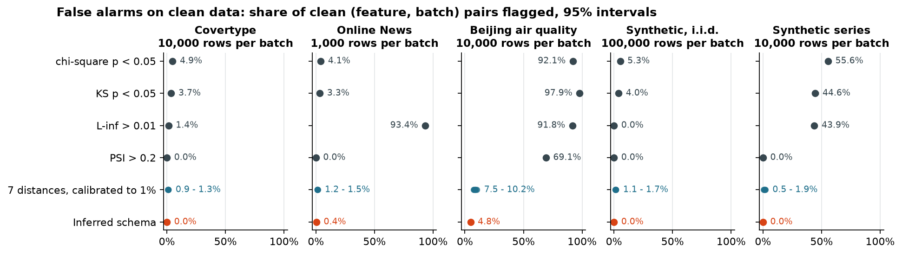
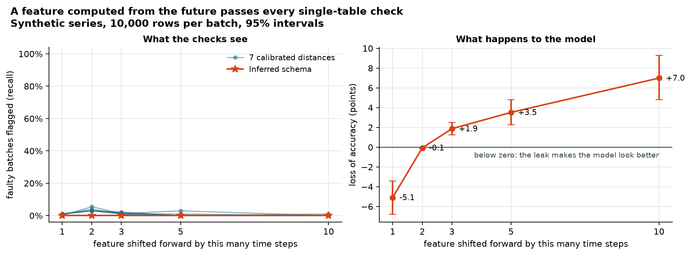

🛡️ ML Data Guard
Data validation for ML pipelines, built around one question: when a known data fault is injected, which check actually finds it, and how many false alarms does that check raise on clean data?
GitHub Repository · Specification · Full result tables

Two faults on the same data. The schema flags a unit change in 0.1% of the rows every time and never sees a small mean shift; the distribution distances do the opposite.Why this project
Most data-validation tutorials end with a rule such as p < 0.05 or PSI > 0.2 and never ask how often that rule is wrong. This project measures it. Twelve kinds of data faults (a feature pinned to -1, a dropped column, a unit change, a distribution shift, a feature computed with future information) are injected into public datasets, and every check is scored on two numbers: the share of faulty batches it flags and the share of clean batches it flags.
The checks compared are the L-inf and L1 distances from Breck et al., "Data Validation for Machine Learning" (SysML 2019), chi-square, KL, JS, PSI, Kolmogorov-Smirnov and a schema validator. It is an independent implementation and evaluation, not a copy of TensorFlow Data Validation. The same code is also a small library and a command-line tool that can run as a CI step.
Explore the results
Start with one of the five examples, or pick any dataset, batch size, fault and dose. A check is useful when it flags faulty batches (filled dot) far more often than clean data (diamond).
The explorer is a single static file built from the published result files; it computes nothing and loads nothing from the network. Open it in its own tab.
Results at a glance
Six runs from one commit: UCI Covertype (581,012 rows), UCI Online News Popularity (39,644 rows), UCI Beijing air quality (412,029 hourly rows, against a static and a rolling reference), a synthetic i.i.d. table and a synthetic time series. Per run and batch size: 1,000 calibration batches, 1,000 clean evaluation batches, 100 faulty batches per fault and severity. Brackets are 95% intervals.
False alarms on clean data (share of clean feature-batch pairs that raise an alarm; nothing was injected):

| Rule | Covertype, 10,000 rows | News, 1,000 rows | Beijing, 10,000 rows |
|---|---|---|---|
chi-square p < 0.05 |
0.049 [0.045, 0.053] | 0.041 [0.039, 0.043] | 0.921 [0.917, 0.926] |
L-inf > 0.01 |
0.014 [0.012, 0.016] | 0.934 [0.931, 0.936] | 0.917 [0.913, 0.922] |
PSI > 0.2 |
0.000 [0.000, 0.000] | 0.000 [0.000, 0.000] | 0.691 [0.684, 0.699] |
| Distances, calibrated to 1% | 0.009 - 0.013 | 0.012 - 0.015 | 0.075 - 0.102 |
| Inferred schema | 0.000 [0.000, 0.000] | 0.004 [0.004, 0.005] | 0.048 [0.044, 0.051] |
Recall on Covertype, 10,000 rows per batch (share of 100 faulty batches flagged; distances calibrated to a 1% false-positive target):
| Fault | Rows affected | L-inf |
chi-square | KS | PSI > 0.2 |
Schema | Model accuracy loss (pp) |
|---|---|---|---|---|---|---|---|
| Unit change (x1000) | 0.1% | 0.01 | 0.03 | 0.01 | 0.00 | 1.00 | +0.02 [+0.02, +0.03] |
| Unit change (x1000) | 5% | 1.00 | 1.00 | 1.00 | 0.00 | 1.00 | +1.09 [+0.95, +1.23] |
| New category | 0.1% | 0.01 | 1.00 | n/a | 0.00 | 1.00 | +0.00 [+0.00, +0.01] |
| Missing values | 20% | 1.00 | 1.00 | 0.02 | 1.00 | 1.00 | +0.98 [+0.73, +1.27] |
| Mean shift, 0.05 sigma | all | 0.96 | 0.97 | 1.00 | 0.19 | 0.00 | +0.16 [+0.11, +0.20] |
| Tiny noise (control) | 0.01% | 0.01 | 0.01 | 0.00 | 0.00 | 0.00 | +0.00 [+0.00, +0.00] |
With 100 batches per cell a recall of 0.50 has an interval of about +/- 0.10; differences of a few points between two rules are not established.
What the evaluation showed
- A schema check and a distribution check find different faults. The inferred schema flags a unit change, a new category or a missing value in 0.1% of the rows in every batch; the distances need about 5% of the rows. A mean shift of 0.05 sigma is found by every distance (0.96 - 1.00) and never by the schema. Neither replaces the other.
- Tutorial thresholds are wrong in both directions.
p < 0.05is a per-feature promise: with 12 features chi-square flags 44% of clean Covertype batches, with 46 features 83% of clean News batches.PSI > 0.2is quiet for the wrong reason: it misses a unit change in 5% of the rows in all 100 batches, a fault that costs the model 1.09 points of accuracy. - On non-stationary data, comparing distributions is close to useless. On Beijing air quality, thresholds calibrated on one year give 7.5 - 10.2% false alarms per feature on the next (target: 1%), and a unit change in every fifth row is flagged in 2 of 100 batches of 1,000 rows.
- A hypothesis that failed. I expected a rolling reference (compare each batch with the 17 days before it) to fix this. On synthetic seasonal data it raises recall from at most 0.6 to at least 0.9; on the real Beijing data it left recall where it was. The result is reported as it came out.
- The schema is not free either. Unedited, it rejects 19% of clean News batches and 40% of clean Beijing batches, because new extremes exceed ranges learned from the past.
- Time travel passes every single-table check. A feature shifted forward in time keeps its distribution: on the synthetic series the best distance flags 1 - 5% of the faulty batches (its false-alarm level) while model accuracy moves by -5.1 [-6.8, -3.4] to +7.0 [+4.8, +9.3] points. What finds it is a row-by-row comparison of training and serving features (
mlguard skew): 1,999 of 2,000 rows flagged in a test on the same fault.

Methodology
- Specification first.
SPEC.mdfixes the fault catalogue, the severity units, the data-security rules and eight evaluation-leakage rules before the code; every change of scope is logged there, and each phase ends with an audit against its acceptance criteria. - Four disjoint splits. Reference 40% (bins, vocabularies, model training), calibration 25% (thresholds), evaluation 25% (clean and faulty batches), held-out 10% (model impact). Time-ordered data is split in contiguous blocks.
- Bins come from the reference only. Quantile edges and vocabularies never depend on the batch under test; unseen categories, missing values and out-of-range values each get a bucket.
- Calibrated versus fixed rules. Each distance gets a threshold at the 99th percentile of its values on clean calibration batches, and is measured next to the fixed rules people copy from tutorials.
- Faults are pure, seeded functions with documented severity units; changes at a small severity are a subset of those at a larger one.
- Model impact is measured, not assumed. A gradient-boosting model trained on the reference split is scored on held-out data with the same fault, with a bootstrap interval.
- Reproducible. The same config gives a byte-identical JSON file; the published tables come from stored configs at one commit.
The library and command line
mlguard inferwrites a JSON schema from reference data (type, presence, range, allowed categories). It holds statistics, never rows; category values can be hashed or left out.mlguard validatechecks a batch against the schema and explains each finding with the observed number, the limit and a suggested schema change.mlguard comparemeasures distribution shift with a limit calibrated for the size of the batch.mlguard skewjoins training and serving logs on a key and compares the same feature of the same row.run_model_testfeeds rows the schema allows, including its edges, to feature or prediction code and returns a single row that breaks it.
Every command exits with 0 (clean), 1 (anomaly) or 2 (unreadable input) and prints text or JSON.
Testing
699 tests; no network, no API key and no data download needed. ruff, pytest with a 95% coverage threshold and pip-audit run on Python 3.11 and 3.12 in GitHub Actions; Dependabot watches the dependencies.
What is verified
- Distances: hand-computed values, agreement with SciPy as an independent oracle, and property-based checks (identity, symmetry, bounds,
L-inf <= L1 / 2, Pinsker's inequality, the data-processing inequality). - Fault injectors: the input is never modified, the same seed gives the same output, zero severity changes nothing, and each fault does exactly what its definition says (for example, time travel reads only future rows and never crosses a group).
- Evaluation leakage: the four splits are disjoint and complete; thresholds and reference statistics stay identical when the evaluation and held-out rows are replaced by garbage.
- The validator's limits: it catches six of the twelve faults; the other six are asserted to be missed, so the blind spot is documented by a test.
- Privacy: with hashed or omitted domains no category value appears in a schema file or a report; cell values are not printed unless asked for.
- Command line: exit codes, JSON output and the walk-through in the examples, which is executed command by command.
- Hygiene: no socket can be opened during tests; no data, secret or large file is tracked.
- The results explorer: every cell of every published result file appears in it with the same rate and interval, cells that were not scored stay empty, and a stale page fails the suite.
- The tests themselves: a script re-introduces 95 hand-written bugs one at a time (for example, thresholds calibrated on the evaluation split, or exit code 0 despite anomalies) and requires the suite to fail for each. This is targeted, not exhaustive, mutation testing.
Not covered
- The published numbers themselves: tests cover the code on small synthetic runs; the full runs were made on one machine.
- The loaders on the real files (CI has no network; they are tested on hand-made archives of the same format) and the download script.
- Whether the synthetic faults resemble real incidents.
- How the explorer renders: no JavaScript test in CI; it was stepped through all 559 combinations in one browser engine.
- pandas nullable and Arrow-backed dtypes, Parquet input, and tables above 20,000 rows for validation and the skew check.
Limitations
- Faults are synthetic and injected one at a time; one model family, accuracy only.
- The schema rule is the default inference, never edited by hand. A maintained schema would raise fewer false alarms and might find less; that trade-off was not measured.
- Sample size matters more than the choice of distance: a unit change in 1% of the rows is found by
L-infin 1% of the batches at 1,000 rows and in 99% at 100,000. - Features recorded on a coarse grid inflate recall for tiny shifts; the per-feature counts are published next to the tables.
- There is no working drift check for non-stationary data here. The results show the problem; they do not solve it.
- The planned comparison with TFDV and Evidently was dropped; the reason is recorded in the specification.
Tech stack: Python, NumPy, pandas, SciPy, scikit-learn, pytest, Hypothesis, ruff, GitHub Actions.
Related: the same specification-first approach and written leakage rules, applied to image data, are in the SEM Nanostructure Classifier. Another measurement-first comparison is the KDB+/Q vs SQL Benchmark. A tested service with CI is the Carbon Nanotubes RAG System.